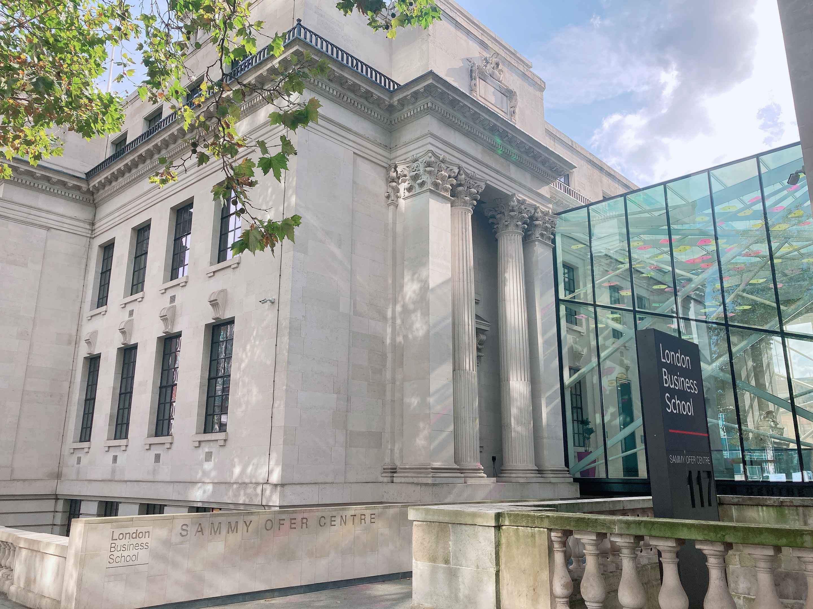
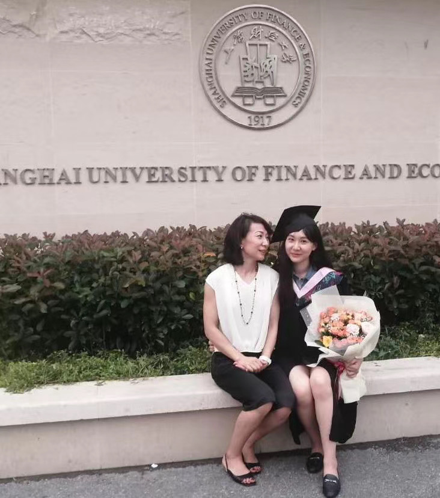

My name is Yirui Xu. You can call me Irena. I gained my Bachelor degree in June, 2020 at Shanghai University of Finance and Economics(SUFE). After that, I applied for and was luckily offered a place at the Global Master in Finance program which is jointly developed by London Business School(LBS) and Fudan University.
Major: Financial Analysis & Corporate Finance
Expected Graduation Date: 6/30/2022
Main Courses Included: Analysis of Financial Statements, Corporate Finance, Asset Management, Date Analytics for Finance
Awards: LBS Scholarship
/
Major: Accounting
GPA: 3.8/4.0 (top5%)
Main Courses Included: Strategic Business Reporting, Advanced Corporate Finance, Intermediate Macro-economics, Intermediate Micro-economics
Awards: Shanghai Distinguished Graduate Award, People’s Scholarship/ Certificate: ACCA (11/13 passed)
